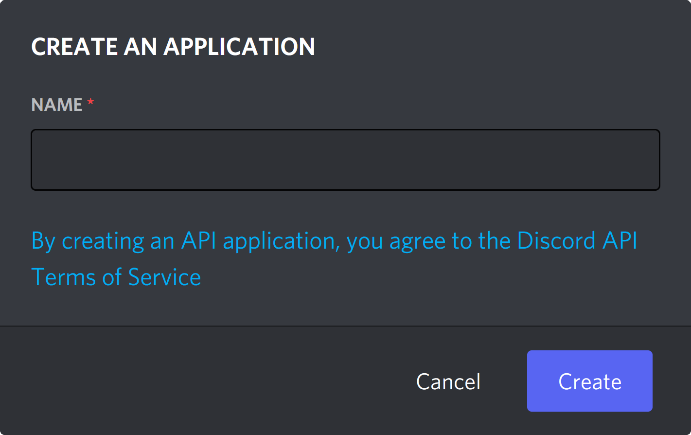
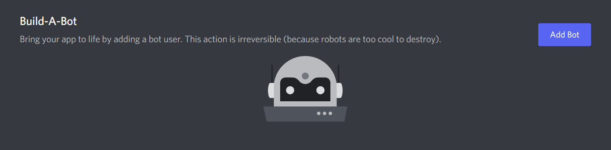
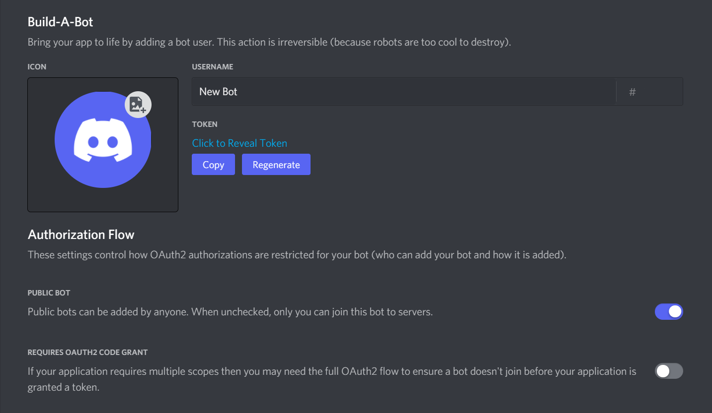
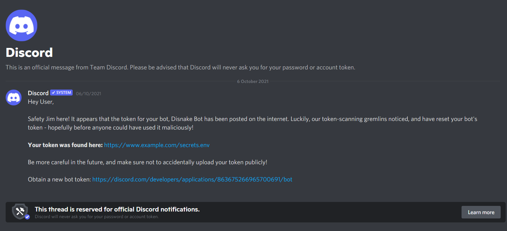
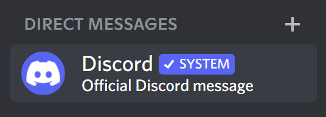

Creating your application¶
The steps mentioned further in this markdown are essentially a copy of the steps mentioned in the docs. Therefore, you can follow the steps from either resource.
Note
If you have already made your bot application, you can skip this document and move on to initial-files.
Creating a bot account¶
In order to work with the library and the Discord API in general, we must first create a Discord Bot account.
Creating a Bot account is a pretty straightforward process.
-
Make sure you’re logged on to the Discord website.
-
Navigate to the application page.
-
Click on the
New Applicationbutton.
-
Give the application a name and click
Create.

-
Create a Bot User by navigating to the
Bottab and clickingAdd Bot.- Click
Yes, do it!to continue.

- Click
-
Make sure that
Public Botis ticked if you want others to invite your bot.- You should also make sure that
Require OAuth2 Code Grantis unchecked unless you are developing a service that needs it. If you’re unsure, then leave it unchecked.

- You should also make sure that
-
Copy the token using the
Copybutton.- This is not the Client Secret at the General Information page.
And that’s it. You now have a bot account and you can login with that token.
Regarding bot tokens¶
Danger
This section is critical, so pay close attention. It explains what your bot token is, as well as the security aspects of it.
What is a token, anyway?¶
It should be worth noting that the token is essentially your bot’s password. You should never share this with someone else. In doing so, someone can log in to your bot and do malicious things, such as leaving servers, ban all members inside a server, or pinging everyone maliciously.
Tokens look like this: OTA4MjgxMjk4NTU1MTA5Mzk2.YYzc4A.TB7Ng6DOnVDlpMS4idjGptsreFg (don't worry, we immediately reset this token before even posting it here!). If it's any shorter and looks more like this: CR8UbizwLgyES9LuHK7eIrXHbRTuqoEs, you copied your client secret instead. Make sure to copy the token if you want your bot to work!
Token leak scenario¶
Let's imagine that you have a bot on over 1,000 servers, and it took you many, many months of coding and patience to get it on that amount. Your token gets leaked somewhere, and now someone else has it. That person can:
- Spam every server your bot is on;
- DM spam as many users as possible;
- Delete as many channels as possible;
- Kick or ban as many server members as possible;
- Make your bot leave all of the servers it has joined;
- Access and damage the underlying infrastructure (your server).
All that and much, much more. Sounds pretty terrible, right? So make sure to keep your token as safe as possible! In the initial files page of the guide, we cover how to safely store your token in a configuration file.
Danger
If you accidentally leaked your token, click the “Regenerate” button as soon as possible. This revokes your old token and re-generates a new one. Now you need to use the new token to login.
Discord's system messages¶
System messages are official messages that Discord sends to alert you of an account issue. These messages can range from a variety of payment issues, support ticket updates, and ToS violation warnings. You can also expect a system message if your bot token has been posted on the internet publicly, and was found by Discord.
Such a message will look as follows:

Warning
Since we do not know the extent to which Discord searches for bot tokens, or the time taken to inform the user about where the bot was found, we recommend not fully depending on this feature. But incase your bot token is found on the internet publicly (say, on a GitHub repository), you can expect Discord to send a system message to the account the bot is linked to.
Note that Discord will never ask for your password or account token, and a system message will never request for the same. System messages from Discord will have a verified SYSTEM tag, and the bar at the bottom of the DM will mention - "This thread is reserved for official Discord notifications".

You can read more about the authenticity of these messages in this article.